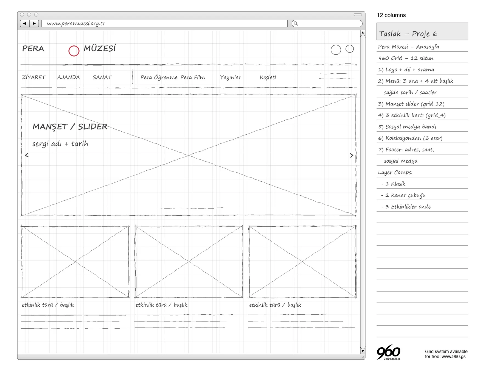
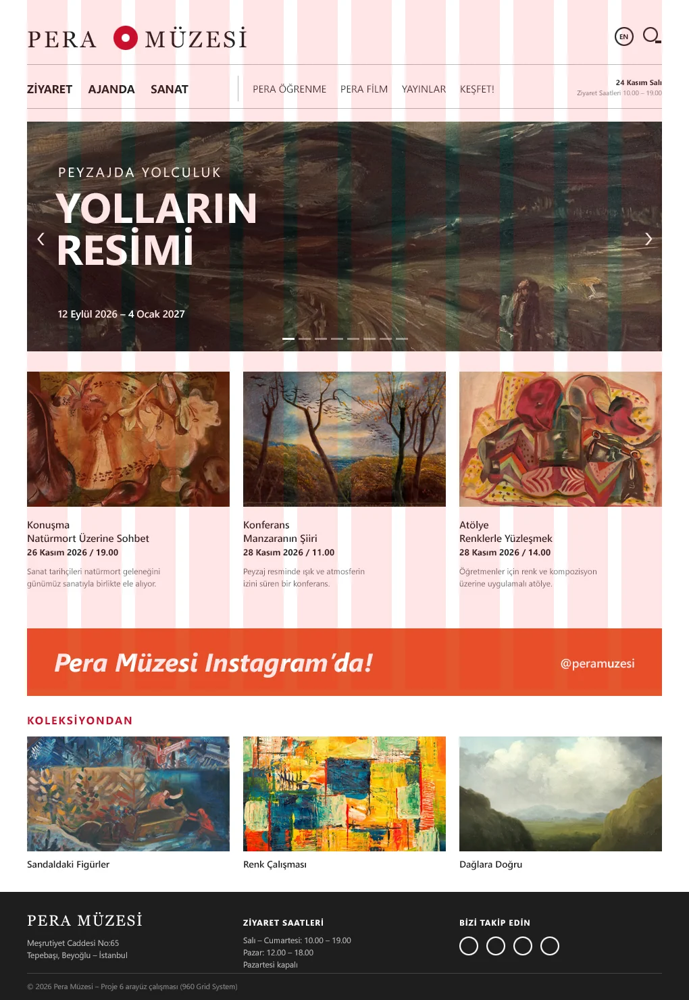
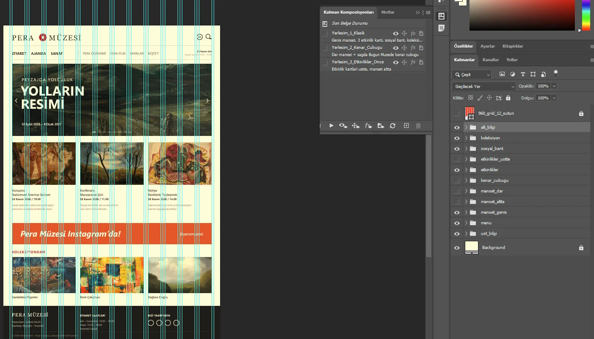

Interface design
Pera Museum — Interface Design
My interface design based on the Pera Museum home page, with three layouts built on a 12-column grid.
Adobe Photoshop · Onur Can Orhan · November 2026

Web interface design
A 960-grid interface study for Pera Museum
Using the Pera Museum home page as a reference, I created a Photoshop interface study, moving from a sketch to content hierarchy and alternative layouts on the 12-column 960.gs grid.
How I made it
I used 960_grid_12_col.psd and sketched on 960_sketch_12_col. Header, navigation, hero, events, social banner, collection and footer are grouped. Layer Comps stores three variants: Classic, Sidebar and Events First.
960.gs · 12 columns · Sketch · Layer Comps · Three layout variants





Design reference: Pera Müzesi · 960.gs
The result
I created Classic, Sidebar and Events First layouts. Using the same content, I compared the relationships between navigation, exhibitions and events under different hierarchies.